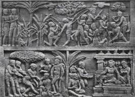
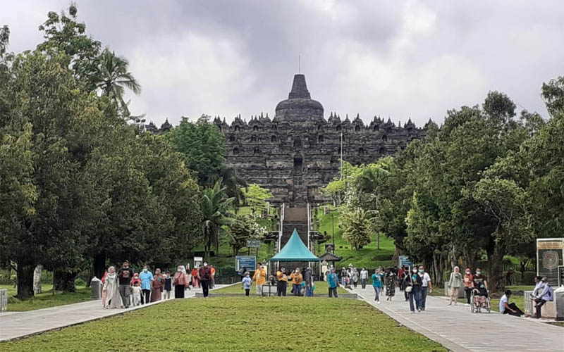

Sejarah Candi Borobudur
Candi Borobudur adalah candi Buddha yang terletak di Magelang, Jawa Tengah, Indonesia. Candi ini dibangun pada abad ke-9 oleh dinasti Syailendra. Candi Borobudur adalah salah satu situs warisan dunia UNESCO dan merupakan candi Buddha terbesar di dunia.
Candi ini terdiri dari sembilan tingkat dengan 504 patung Buddha dan 2.672 panel relief yang menggambarkan ajaran Buddha. Struktur bangunan candi yang berbentuk piramida ini dirancang untuk menggambarkan alam semesta dalam ajaran Buddha.
Daya Tarik Utama
Beberapa daya tarik utama di Candi Borobudur termasuk relief-relief yang menggambarkan kehidupan Buddha, stupa-stupa yang indah, dan pemandangan spektakuler dari puncak candi. Candi ini juga merupakan tempat yang populer untuk menyaksikan matahari terbit dan terbenam.
Aktivitas Wisata
Di Candi Borobudur, Anda dapat menikmati berbagai aktivitas seperti berjalan-jalan di sekitar candi, mempelajari sejarah dan budaya, serta mengikuti tur berpemandu. Terdapat juga museum dan pusat informasi yang memberikan pengetahuan lebih dalam mengenai candi dan sejarahnya.
.jpeg)
.jpeg)
{kind=link}
{kind=link}
{kind=link}